RECOVERY REVIEW · BOOT ATRIUM
Actual browser evidence. Functional recovery is implemented; visual approval remains with the user. Mara and foreground material detail still fall short of the concept. This page does not claim a finished release.
23-point report · Provenance · Asset selections · Browser checks · Startup measurements
Real pointer and keyboard input. Original screencast frame timing; no simulation-state injection.
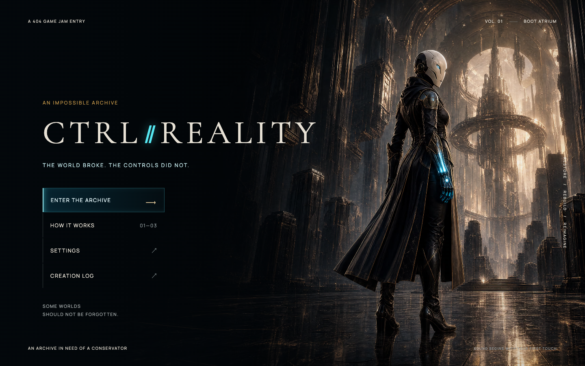
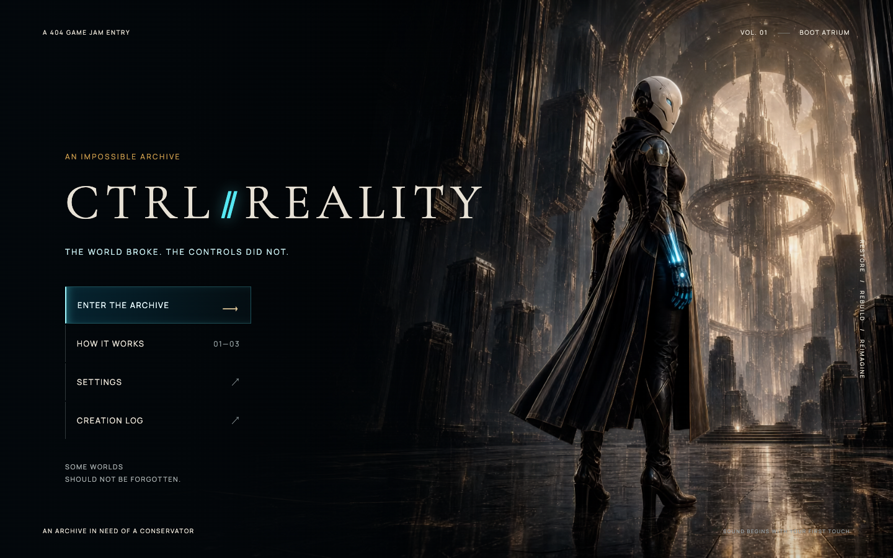
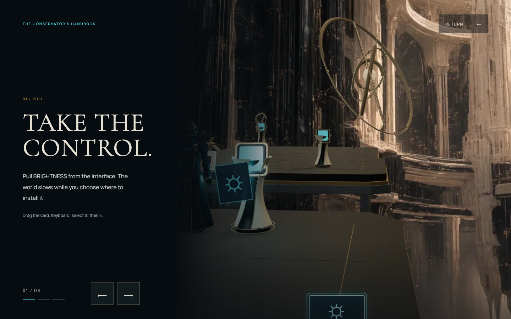
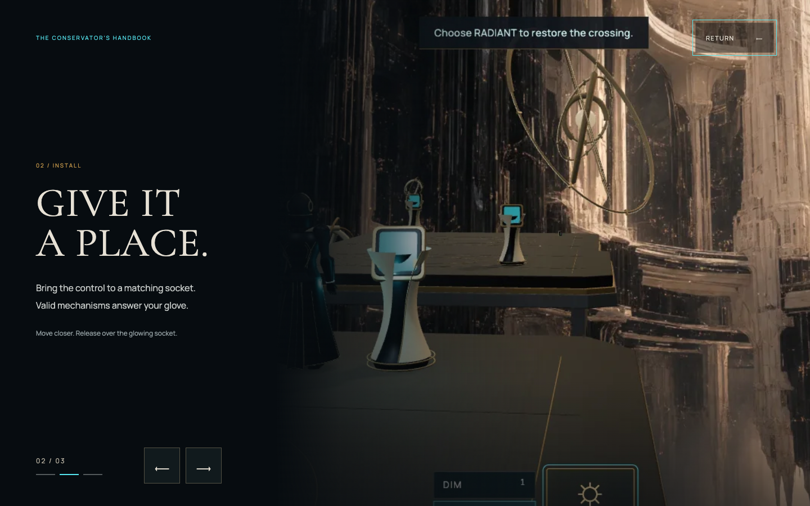
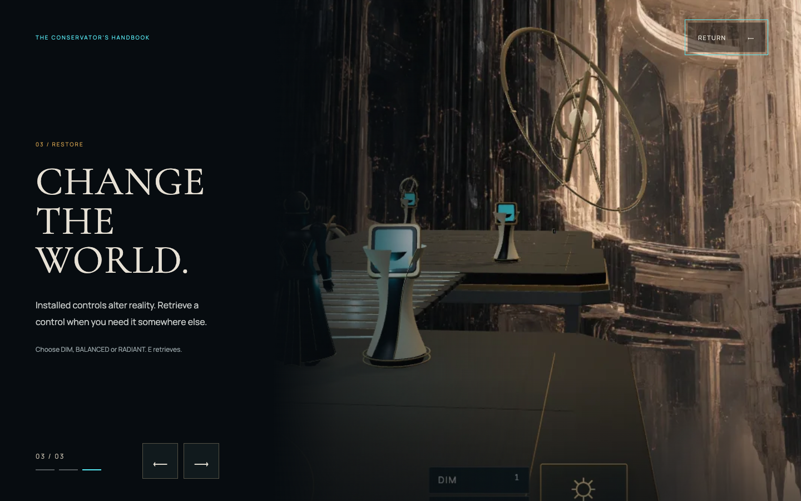
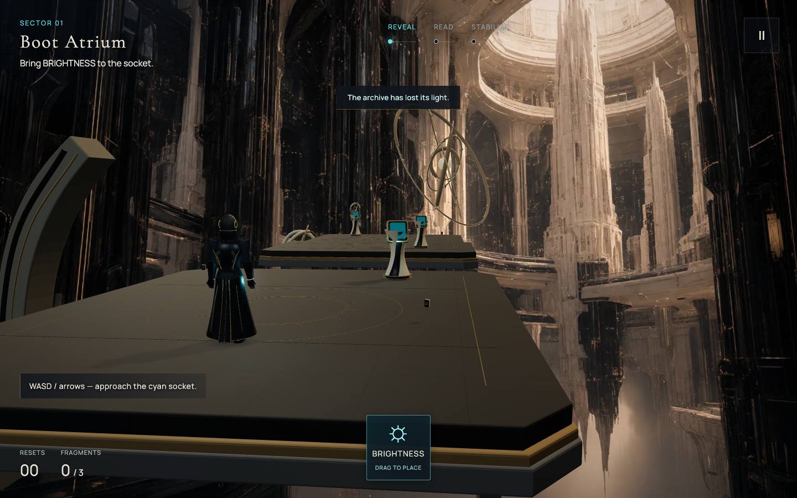
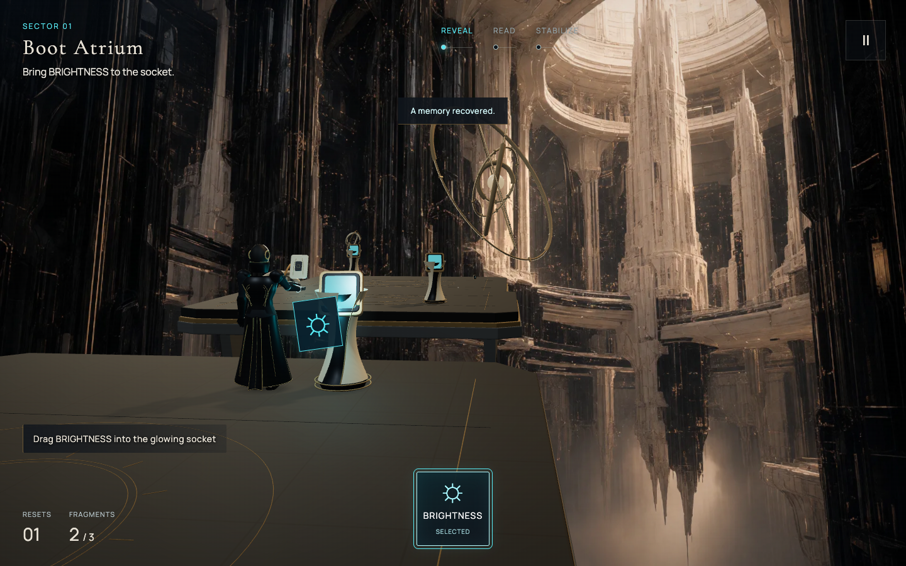
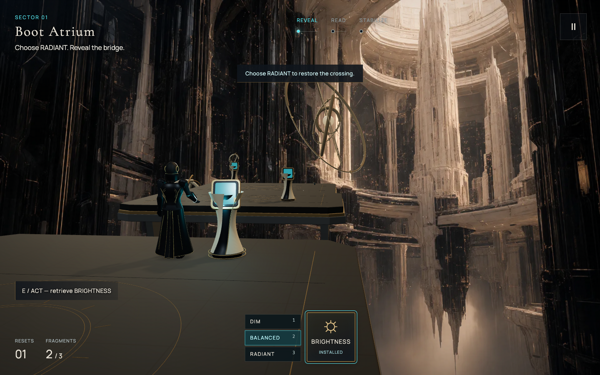
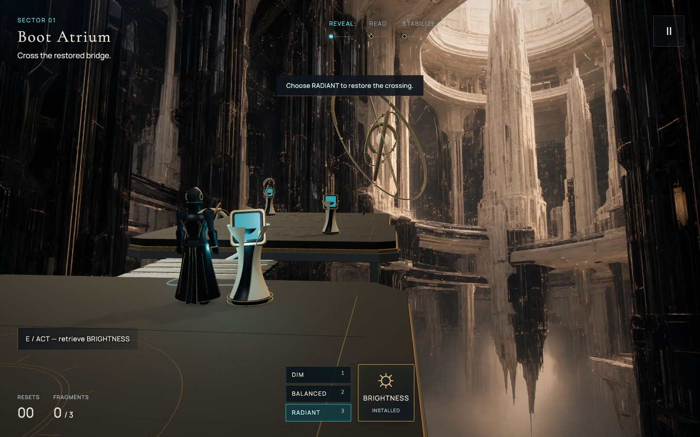
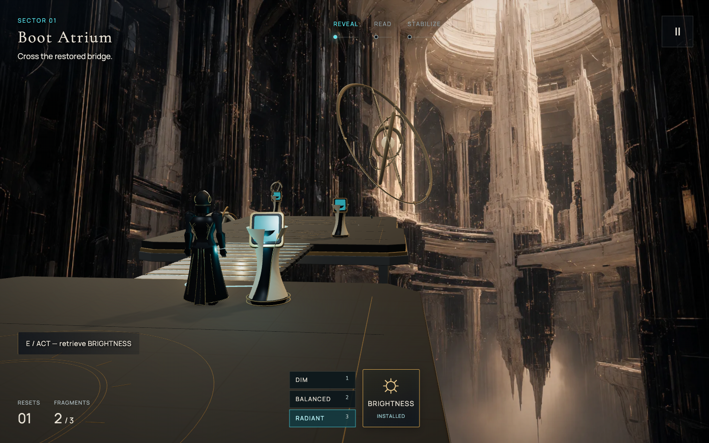
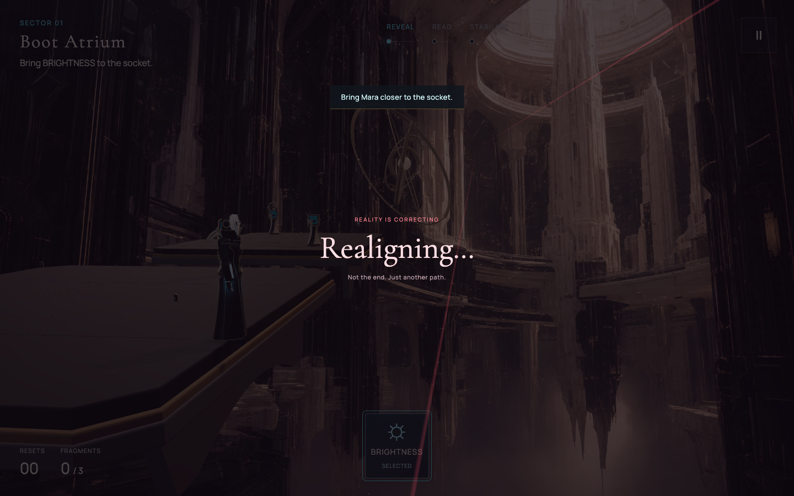
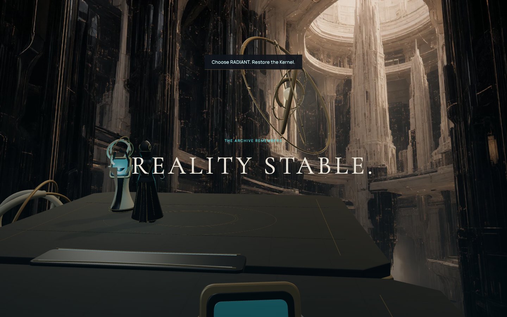
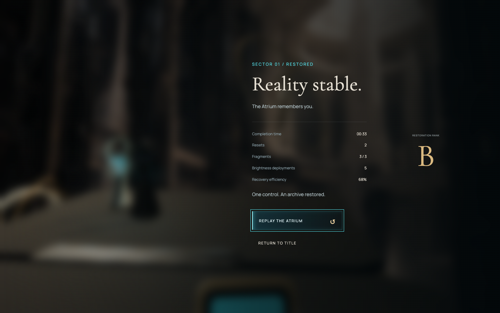
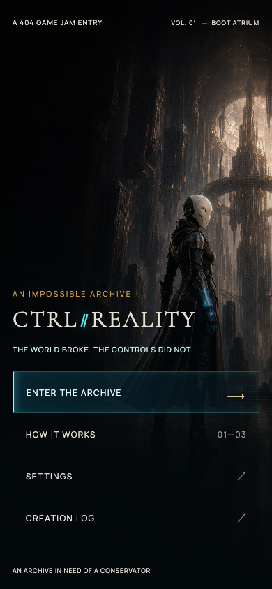
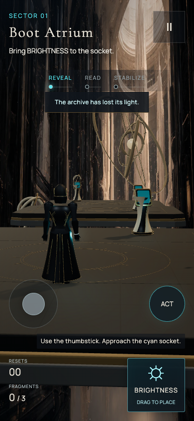
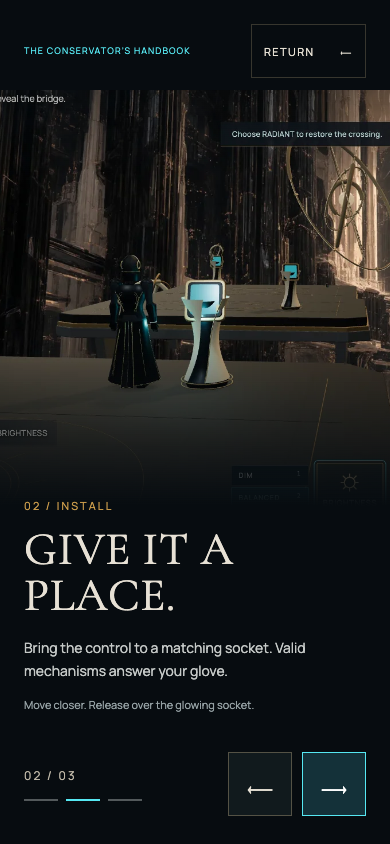
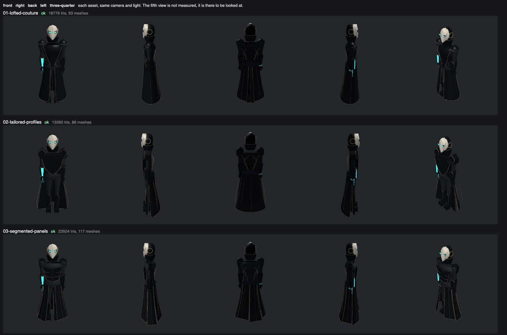